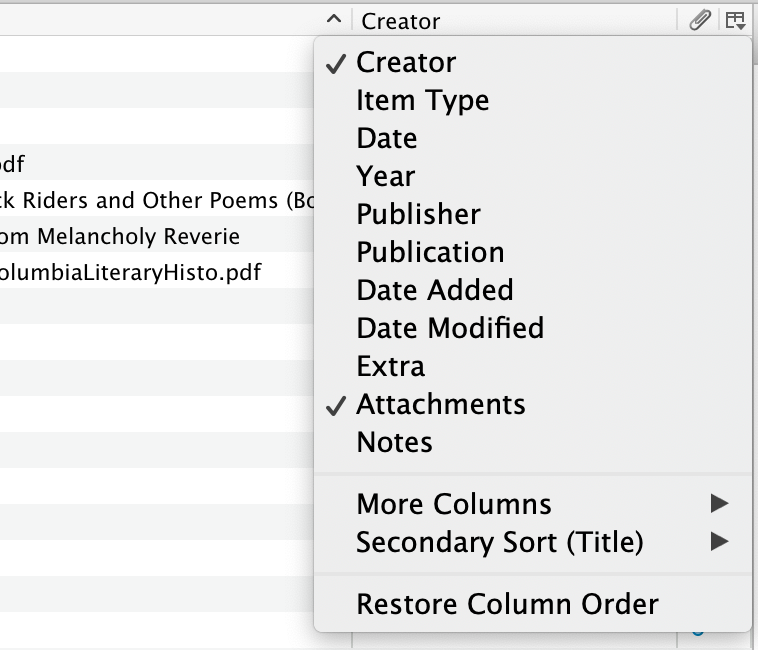

Items in the center pane can be sorted by various properties, such as their title, creators, or the date they were added to your library.
You change the way you sort your library items based on your preferred library preferences. By default, properties in the center pane are arranged from left to right in the order in which they are shown in the dropdown menu, and Zotero will show columns for the Title, Creators, and Attachments properties in the center pane.
Click on any of the column headers at the top of the center pane to:
Clicking a header multiple times toggles between ascending and descending sorts (the header will show an upward and downward arrow, respectively).
You can change which properties are shown by clicking the sort icon , found to the right of the column headers. Checking properties in the dropdown menu adds them to the center column, and unchecking removes them.
For each column, you can also choose the Secondary Sort field (which field is used to break ties when sorting) by clicking on the sort icon and selecting "Secondary Sort".